静态选路
Table of Contents
选路是IP最重要的功能之一。图9-1是IP层处理过程的简单流程：
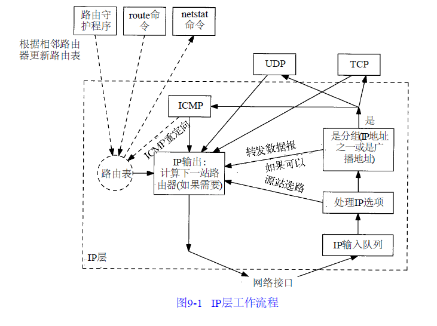
需要进行选路的数据报可以由本地主机产生，也可以由其他主机产生。在后一种情况下，主机必须配置成一个路由器，否则通过网络接口接收到的数据报，如果目的地址不是本机就要被丢弃
图中还描述了一个路由守护程序，通常这是一个用户进程。在Unix系统中，大多数普通的守护程序都是路由程序和网关程序。在某个给定主机上运行何种路由协议，如何在相邻路由器上交换选路信息，以及选路协议是如何工作的，所有这些问题都是非常复杂的，其本身就可以用整本书来加以讨论。下一章将简单讨论动态选路和选路信息协议RIP。在本章主要的目的是了解单个IP层如何作出路由决策
图中所示的路由表经常被IP访问，但是它被路由守护程序更新的频度却要低得多。当接收到ICMP重定向报文时，路由表也要被更新，这一点将在讨论route命令时加以介绍。在本章中，还将用netstat命令来显示路由表
路由表
开始讨论IP选路之前，首先要理解内核是如何维护路由表的。路由表中包含的信息决定了IP层所做的所有决策。在3.3节中，曾经列出了IP搜索路由表的几个步骤：
- 搜索匹配的主机地址
- 搜索匹配的网络地址
- 搜索默认表项（默认表项一般在路由表中被指定为一个网络表项，其网络号为0）
匹配主机地址步骤始终发生在匹配网络地址步骤之前
IP层进行的选路实际上是一种选路机制，它搜索路由表并决定向哪个网络接口发送分组。这区别于选路策略，它只是一组决定把哪些路由放入路由表的规则。IP执行选路机制，而路由守护程序则一般提供选路策略
简单路由表
在主机svr4上，先执行带-r选项的netstat命令列出路由表，然后以-n选项再次执行该命令，以数字格式打印出IP地址：
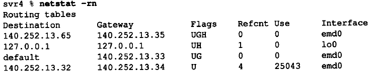
输出字段
Flags字段
对于一个给定的路由器，可以打印出五种不同的标志(flag)：
- U：该路由可以使用
- G：该路由是到一个网关（路由器）。如果没有设置该标志，说明目的地是直接相连的
- H：该路由是到一个主机，也就是说，目的地址是一个完整的主机地址。如果没有设置该标志，说明该路由是到一个网络，而目的地址是一个网络地址（一个网络号，或者网络号与子网号的组合）
- D：该路由是由重定向报文创建
- M：该路由已被重定向报文修改
标志G是非常重要的，因为由它区分了间接路由和直接路由（直接路由来说是不设置标志G的）。其区别在于：
- 发往直接路由的分组中不但具有指明目的端的IP地址，还具有其链路层地址
- 当分组被发往一个间接路由时，IP地址指明的是最终的目的地，但是链路层地址指明的是网关（即下一站路由器）。我们在图3-4已看到这样的例子。在这个路由表例子中，有一个间接路由（设置了标志G），因此采用这一项路由的分组其IP地址是最终的目的地（140.252.13.65），但是其链路层地址必须对应于路由器140.252.13.35
H标志表明，目的地址是一个完整的主机地址。没有设置H标志说明目的地址是一个网络地址（主机号部分为0）。当为某个目的IP地址搜索路由表时，主机地址项必须与目的地址完全匹配，而网络地址项只需要匹配目的地址的网络号和子网号就可以了。另外，大多数版本的netstat命令首先打印出所有的主机路由表项，然后才是网络路由表项
Refcnt字段
参考记数：正在使用路由的活动进程个数。面向连接的协议如TCP在建立连接时要固定路由。如果在主机svr4和slip之间建立Telnet连接，可以看到参考记数值变为1。建立另一个Telnet连接时，它的值将增加为2，依此类推
Use字段
显示的是通过该路由发送的分组数。如果我们是这个路由的唯一用户，那么运行ping程序发送5个分组后，它的值将变为5
Interface字段
本地网络接口的名字
输出解释
- 第1行：如果目的地是140.252.13.65（slip主机），那么网关（路由器）将把分组转发给140.252.13.35（bsdi）。这正是所期望的，因为主机slip通过SLIP链路与bsdi相连接，而bsdi与该主机在同一个以太网上
- 第2行：是环回接口，它的名字始终为lo0。没有设置G标志，因为该路由不是一个网关。H标志说明目的地址（127.0.0.1）是一个主机地址，而不是一个网络地址。由于没有设置G标志，说明这是一个直接路由，网关列给出的是外出IP地址
- 第3行：默认路由。每个主机都有一个或多个默认路由。这一项表明，如果在表中没有找到特定的路由，就把分组发送到路由器140.252.13.33（sun主机）。这说明当前主机（svr4）利用这一个路由表项就可以通过Internet经路由器sun（及其SLIP链路）访问其他的系统
建立默认路由是一个功能很强的概念。该路由标志（UG）表明它是一个网关，这是我们所期望的。这里，我们有意称sun为路由器而不是主机，因为它被当作默认路由器来使用，它发挥的是IP转发功能，而不是主机功能
- 最后一行：所在的以太网。H标志没有设置，说明目的地址（140.252.13.32）是一个网络地址，其主机地址部分设为0。事实上，是它的低5位设为0。由于这是一个直接路由（G标志没有被设置），网关列指出的IP地址是外出地址
netstat命令输出的最后一项还隐含了另一个信息，那就是目的地址（140.252.13.32）的子网掩码。如果要把该目的地址与140.252.13.33进行比较，那么在比较之前首先要把它与目的地址掩码（0xffffffe0）进行逻辑与。由于内核知道每个路由表项对应的接口，而且每个接口都有一个对应的子网掩码，因此每个路由表项都有一个隐含的子网掩码
复杂性
主机路由表的复杂性取决于主机所在网络的拓扑结构：
- 最简单的（也是最不令人感兴趣的）情况是主机根本没有与任何网络相连。TCP/IP协议仍然能用于这样的主机，但是只能与自己本身通信。这种情况下的路由表只包含环回接口一项
- 接下来的情况是主机连在一个局域网上，只能访问局域网上的主机。这时路由表包含两项：一项是环回接口，另一项是局域网（如以太网）
- 如果主机能够通过单个路由器访问其他网络（如Internet）时，那么就要进行下一步。一般情况下增加一个默认表项指向该路由器
- 如果要新增其他的特定主机或网络路由，那么就要进行最后一步。在例子中，到主机slip的路由要通过路由器bsdi就是这样的例子
路由选路
使用这个路由表为主机svr4上的一些分组例子选择路由：
- 假定目的地址是主机sun，140.252.13.33。首先进行主机地址的匹配。路由表中的两个主机地址表项（slip和localhost）均不匹配，接着进行网络地址匹配。这一次匹配成功，找到表项140.252.13.32（网络号和子网号都相同），因此使用emd0接口。这是一个直接路由，因此链路层地址将是目的端的地址
- 假定目的地址是主机slip，140.252.13.65。首先在路由表搜索主机地址，并找到一个匹配地址。这是一个间接路由，因此目的端的IP地址仍然是140.252.13.65，但是链路层地址必须是网关140.252.13.65的链路层地址，其接口名为emd0
- 通过Internet给主机aw.com(192.207.117.2)发送一份数据报。首先在路由表中搜索主机地址，失败后进行网络地址匹配。最后成功地找到默认表项。该路由是一个间接路由，通过网关140.252.13.33，并使用接口名为emd0
- 给本机发送一份数据报。有四种方法可以完成这件事，如用主机名、主机IP地址、环回名或者环回IP地址：
ftp svr4 ftp 140.252.13.34 ftp localhost ftp 127.0.0.1
- 在前两种情况下，对路由表的第2次搜索得到一个匹配的网络地址140.252.13.32，并把IP报文传送给以太网驱动程序。正如图2-4所示的那样，IP报文中的目的地址为本机IP地址，因此报文被送给环回驱动程序，然后由驱动程序把报文放入IP输出队列中
- 在后两种情况下，由于指定了环回接口的名字或IP地址，第一次搜索就找到匹配的主机地址，因此报文直接被送给环回驱动程序，然后由驱动程序把报文放入IP输出队列中
初始化路由表
每当初始化一个接口时（通常是用ifconfig命令设置接口地址），就为接口自动创建一个直接路由。对于点对点链路和环回接口来说，路由是到达主机（设置H标志）。对于广播接口来说，如以太网，路由是到达网络
到达主机或网络的路由如果不是直接相连的，那么就必须加入路由表。一个常用的方法是在系统引导时显式地在初始化文件中运行route命令。在主机svr4上，我们运行下面两个命令来添加路由表中的表项：
route add default sun 1 route add slip bsdi 1
- 第3个参数（default和slip）代表目的端
- 第4个参数代表网关（路由器）
- 第五个参数代表路由的度量(metric)：route命令在度量值大于0时要为该路由设置G标志，否则，当耗费值为0时就不设置G标志
路由配置
不幸的是，几乎没有系统愿意在启动文件中包含route命令：
- 在4.4BSD和BSD/386系统中，启动文件是/etc/netstart
- 在SVR4系统中，启动文件是/etc/inet/rc.inet
- 在Solaris 2.x中，启动文件是/etc/rc2.d/S69inet
- 在SunOS 4.1.x中，启动文件是/etc/rc.local
- 而AIX 3.2.2则使用文件/etc/rc.net
一些系统允许在某个文件中指定默认的路由器，如/etc/defaultrouter。于是在每次重新启动系统时都要在路由表中加入该默认项
初始化路由表的其他方法是运行路由守护程序或者用较新的路由器发现协议
较复杂的路由表
主机sun是所有主机的默认路由器，因为它有拨号SLIP链路连接到Internet上：
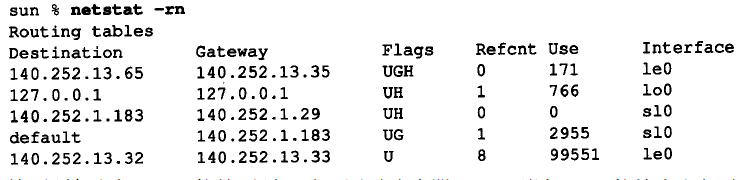
- 前两项与主机svr4的前两项一致：通过路由器bsdi到达slip的特定主机路由，以及环回路由
- 第3行是新加的：这是一个直接到达主机的路由(没有设置G标志，但设置了H标志)，对应于点对点的链路，即SLIP接口。如果把它与ifconfig命令的输出进行比较：
sun$ ifconfig sl0 sl0: flags=1051<UP , POINTOPOINT , RUNNING > inet 140.252.1.29 --> 140.252.1.183 netmask ffffff00
可以发现路由表中的目的地址就是点对点链路的另一端(即路由器netb), 网关地址为外出接口的本地IP地址140.252.1.29 (前面已经说过, netstat为直接路由打印出来的网关地址就是本地接口所用的IP地址)
- 默认的路由表项是一个到达网络的间接路由(设置了G标志，但没有设置H标志)，这正是所希望的。网关地址是路由器的地址(140.252.1.183，SLIP链路的另一端), 而不是SLIP链路的本地IP地址(140.252.1.29)。其原因还是因为是间接路由，不是直接路由
还应该指出的是，netstat输出的第3和第4行(接口名为sl0)由SLIP软件在启动时创建，并在关闭时删除
没有达到目的地的路由
如果路由表中没有默认项，而又没有找到匹配项，这种情况下，结果取决于该IP数据报是由主机产生的还是被转发的（例如，是不是一个路由器）：
- 如果数据报是由本地主机产生的，那么就给发送该数据报的应用程序返回一个差错，或者是“主机不可达差错”或者是“网络不可达差错”
- 如果是被转发的数据报，那么就给原始发送端发送一份ICMP主机不可达的差错报文
ICMP主机不可达报错
当路由器收到一份IP数据报但又不能转发时，就要发送一份ICMP“主机不可达”差错报文（格式如图6-10所示）。可以很容易发现，在网络上把接在路由器sun上的拨号SLIP链路断开，然后试图通过该SLIP链路发送分组给任何指定sun为默认路由器的主机
上一节通过在路由器sun上运行netstat命令可以看到，当接通SLIP链路启动时就要在路由表中增加一项使用SLIP链路的表项，而当断开SLIP链路时则删除该表项。这说明当SLIP链路断开时，sun的路由表中就没有默认项了。但是我们不想改变网络上其他主机的路由表，即同时删除它们的默认路由。相反，对于sun不能转发的分组，我们对它产生的ICMP主机不可达差错报文进行计数
在主机svr4上运行ping程序就可以看到这一点，它在拨号SLIP链路的另一端（拨号链路已被断开）：
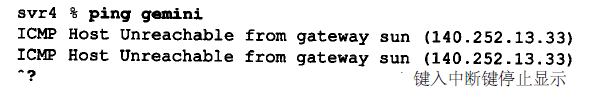
在主机svr4上运行tcpdump命令的输出如下图所示：
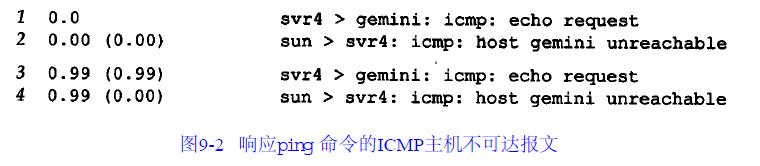
当路由器sun发现找不到能到达主机gemini的路由时，它就响应一个主机不可达的回显请求报文
如果把SLIP链路接到Internet上，然后试图ping一个与Internet没有连接的IP地址，那么应该会产生差错。但令人感兴趣的是，可以看到在返回差错报文之前，分组要在Internet上传送多远：
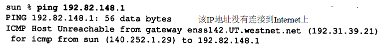
从上图可以看出，在发现该IP地址是无效的之前，该分组已通过了6个路由器。只有当它到达NSFNET骨干网的边界时才检测到差错。这说明，6个路由器之所以能转发分组是因为路由表中有默认项。只有当分组到达NSFNET骨干网时，路由器才能知道每个连接到Internet上的每个网络的信息。这说明许多路由器只能在局部范围内工作。而只有由顶层选路域来维护大多数Internet网站的路由信息，而不使用默认路由。在Internet上存在5个这样的顶层选路域：
- NSFNET主干网
- 商业互联网交换(Commercial Internet Exchange:CIX)
- NASA科学互联网(NASA Science Internet)
- SprintLink
- 欧洲IP主干网(EBONE)
转发还是不转发
一般都假定主机不转发IP数据报，除非对它们进行特殊配置而作为路由器使用。如何进行这样的配置呢？
大多数伯克利派生出来的系统都有一个内核变量ipforwarding，或其他类似的名字。一些系统（如BSD/386和SVR4）只有在该变量值不为0的情况下才转发数据报：
- SunOS 4.1.x允许该变量可以有三个不同的值：
- -1：始终不转发并且始终不改变它的值
- 0：默认条件下不转发，但是当打开两个或更多个接口时就把该值设为1
- 1：始终转发
- Solaris 2.x：
- 0：始终不转发
- 1：始终转发
- 2：在打开两个或更多个接口时才转发
- 较早版本的4.2BSD主机在默认条件下可以转发数据报，这给没有进行正确配置的系统带来了许多问题。这就是内核选项为什么要设成默认的“始终不转发”的原因，除非系统管理员进行特殊设置
ICMP重定向报错
当IP数据报应该被发送到另一个路由器时，收到数据报的路由器就要发送ICMP重定向差错报文给IP数据报的发送端。正如图9-3所示的那样。只有当主机可以选择路由器发送分组的情况下，我们才可能看到ICMP重定向报文：
- 假定主机发送一份IP数据报给R1。这种选路决策经常发生，因为R1是该主机的默认路由
- R1收到数据报并且检查它的路由表，发现R2是发送该数据报的下一站。当它把数据报发送给R2时，R1检测到它正在发送的接口与数据报到达接口是相同的（即主机和两个路由器所在的LAN）。这样就给路由器发送重定向报文给原始发送端提供了线索
- R1发送一份ICMP重定向报文给主机，告诉它以后把数据报发送给R2而不是R1
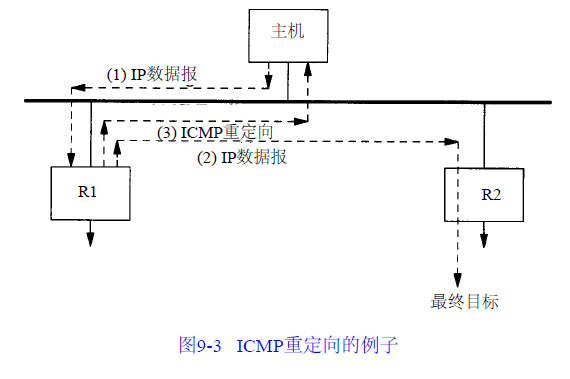
重定向一般用来让具有很少选路信息的主机逐渐建立更完善的路由表。主机启动时路由表中可以只有一个默认表项。一旦默认路由发生差错，默认路由器将通知它进行重定向，并允许主机对路由表作相应的改动。ICMP重定向允许TCP/IP主机在进行选路时不需要具备智能特性，而把所有的智能特性放在路由器端。显然，在我们的例子中，R1和R2必须知道有关相连网络的更多拓扑结构的信息，但是连在LAN上的所有主机在启动时只需一个默认路由，通过接收重定向报文来逐步学习
示例
在我们的网络上观察到ICMP重定向的操作过程。尽管在拓扑图中只画出了三台主机（aix,solaris和gemini）和两台路由器（gateway和netb），但是整个网络有超过150台主机和10台另外的路由器。大多数的主机都把gateway指定为默认路由器，因为它提供了Internet的入口
子网140.252.1上的主机是如何访问所在图中底下的四台主机的呢？首先，如果在SLIP链路的一端只有一台主机，那么就要使用代理ARP。这意味着位于拓扑图顶部的子网（140.252.1）中的主机不需要其他特殊条件就可以访问主机sun（140.252.1.29）。位于netb上的代理ARP软件处理这些事情
但是，当网络位于SLIP链路的另一端时，就要涉及到选路了。一个办法是让所有的主机和路由器都知道路由器netb是网络140.252.13的网关。这可以在每个主机的路由表中设置静态路由，或者在每个主机上运行守护程序来实现。另一个更简单的办法（也是实际采用的方法）是利用ICMP重定向报文来实现
在位于网络顶部的主机solaris上运行ping程序到主机bsdi(140.252.13.35)。由于子网号不相同，代理ARP不能使用。假定没有安装静态路由，发送的第一个分组将采用到路由器gateway的默认路由。下面是运行ping程序之前的路由表：
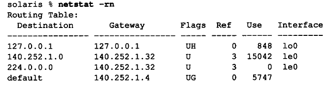
其中224.0.0.0所在的表项是IP广播地址。如果为ping程序指定-v选项，可以看到主机接收到的任何ICMP报文。我们需要指定该选项以观察发送的重定向报文：
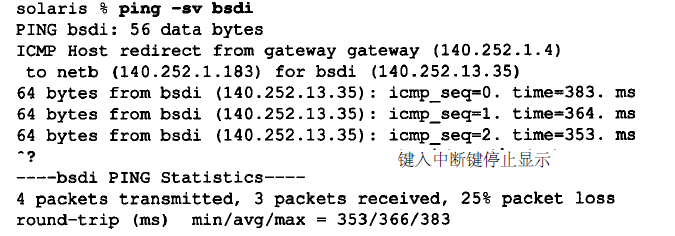
在收到ping程序的第一个响应之前，主机先收到一份来自默认路由器gateway发来的ICMP重定向报文。如果这时查看路由表，就会发现已经插入了一个到主机bsdi的新路由项：
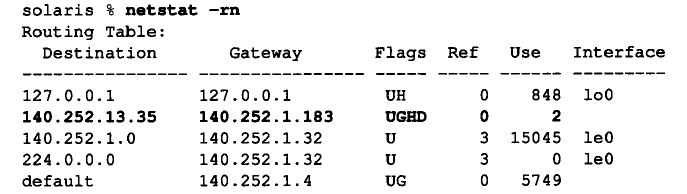
这是第一次看到D标志，表示该路由是被ICMP重定向报文创建的。G标志说明这是一份到达gateway(netb）的间接路由，H标志则说明这是一个主机路由，而不是一个网络路由。由于这是一个被主机重定向报文增加的主机路由，因此它只处理到达主机bsdi的报文
如果接着访问主机svr4，那么就要产生另一个ICMP重定向报文，创建另一个主机路由
类似地，访问主机slip也创建另一个主机路由。位于子网上的三台主机（bsdi,svr4和slip）还可以由一个指向路由器sun的网络路由来进行处理。但是ICMP重定向报文创建的是主机路由，而不是网络路由，这是因为在本例中，产生ICMP重定向报文的路由器并不知道位于140.252.13网络上的子网信息
报文
ICMP重定向报文的格式如下图所示：
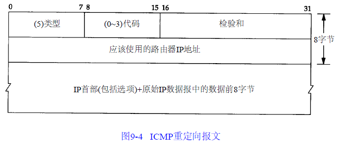
类型字段
有四种不同类型的重定向报文，有不同的代码值，如下表所示：
| 代码 | 描述 |
| 0 | 网络重定向 |
| 1 | 主机重定向 |
| 2 | 服务类型和网络重定向 |
| 3 | 服务类型和主机重定向 |
地址字段
ICMP重定向报文的接收者必须查看三个IP地址：
- 导致重定向的IP地址：即ICMP重定向报文的数据位于IP数据报的首部
- 发送重定向报文的路由器的IP地址：包含重定向信息的IP数据报中的源地址
- 应该采用的路由器IP地址：在ICMP报文中的4~7字节
规则
关于ICMP重定向报文有很多规则：
- 重定向报文只能由路由器生成，而不能由主机生成
- 重定向报文是为主机而不是为路由器使用的。假定路由器和其他一些路由器共同参与某一种选路协议，则该协议就能消除重定向的需要（这意味着在图9-1中的路由表应该消除或者能被选路守护程序修改，或者能被重定向报文修改，但不能同时被二者修改）
在4.4BSD系统中，当主机作为路由器使用时，要进行下列检查。在生成ICMP重定向报文之前这些条件都要满足：
- 出接口必须等于入接口
- 用于向外传送数据报的路由不能被ICMP重定向报文创建或修改过，而且不能是路由器的默认路由
- 数据报不能用源站选路来转发
- 内核必须配置成可以发送重定向报文：
- 内核变量一般为ipsendredirects或其他类似的名字
- 大多数当前的系统，例如BSD、SunOSSolaris及AIX在默认条件下都设置该变量，使系统可以发送重定向报文
- 其他系统如SVR4则关闭了该项功能
另外，一台4.4BSD主机收到ICMP重定向报文后，在修改路由表之前要作一些检查。这是为了防止路由器或主机的误操作，以及恶意用户的破坏，导致错误地修改系统路由表：
- 新的路由器必须直接与网络相连接
- 重定向报文必须来自当前到目的地所选择的路由器
- 重定向报文不能让主机本身作为路由器
- 被修改的路由必须是一个间接路由
关于重定向最后要指出的是，路由器应该发送的只是对主机的重定向（代码1或3），而不是对网络的重定向。子网的存在使得难于准确指明何时应发送对网络的重定向而不是对主机的重定向。只当路由器发送了错误的类型时，一些主机才把收到的对网络的重定向当作对主机的重定向来处理
ICMP路由器发现
前面已提到过一种初始化路由表的方法，即在配置文件中指定静态路由。这种方法经常用来设置默认路由。另一种新的方法是利用ICMP路由器通告和请求报文
一般认为，主机在引导以后要广播或多播传送一份路由器请求报文。一台或更多台路由器响应一份路由器通告报文。另外，路由器定期地广播或多播传送它们的路由器通告报文，允许每个正在监听的主机相应地更新它们的路由表
RFC 1256确定了这两种ICMP报文的格式。ICMP路由器请求报文的格式如图9-6所示，ICMP路由器通告报文的格式如图9-7所示：
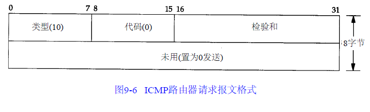
路由器在一份报文中可以通告多个地址：
- 地址数：报文中所含的地址数
- 地址项大小：每个路由器地址32bit字的数目，始终为2
- 生存期：通告地址有效的时间（秒数）
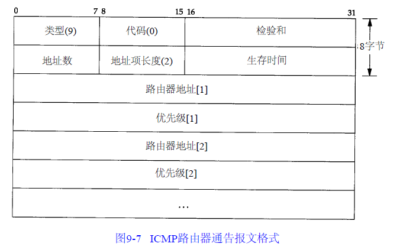
接下来是一对或多对IP地址和优先级：
- IP地址：必须是发送路由器的某个地址
- 优先级：是一个有符号的32bit整数，指出该IP地址作为默认路由器地址的优先等级，这是与子网上的其他路由器相比较而言的。值越大说明优先级越高。优先级为0x80000000说明对应的地址不能作为默认路由器地址使用，尽管它也包含中通告报文中。优先级的默认值一般为0
路由器操作
当路由器启动时，它定期在所有广播或多播传送接口上发送通告报文。准确地说，这些通告报文不是定期发送的，而是随机传送的，以减小与子网上其他路由器发生冲突的概率
一般每两次通告间隔450秒和600秒。一份给定的通告报文默认生命周期是30分钟
使用生命周期域的另一个时机是当路由器上的某个接口被关闭时。在这种情况下，路由器可以在该接口上发送最后一份通告报文，并把生命周期值设为0
除了定期发送主动提供的通告报文以外，路由器还要监听来自主机的请求报文，并发送路由器通告报文以响应这些请求报文
如果子网上有多台路由器，由系统管理员为每个路由器设置优先等级。例如，主默认路由器就要比备份路由器具有更高的优先级
主机操作
主机在引导期间一般发送三份路由器请求报文，每三秒钟发送一次。一旦接收到一个有效的通告报文，就停止发送请求报文
主机也监听来自相邻路由器的请求报文。这些通告报文可以改变主机的默认路由器。另外，如果没有接收到来自当前默认路由器的通告报文，那么默认路由器会超时
只要有一般的默认路由器，该路由器就会每隔10分钟发送通告报文，报文的生命周期是30分钟。这说明主机的默认表项是不会超时的，即使错过一份或两份通告报文
实现
路由器发现报文一般由用户进程（守护程序）创建和处理。这样，在图9-1中就有另一个修改路由表的程序，尽管它只增加或删除默认表项。守护程序必须把它配置成一台路由器或主机来使用
这两种ICMP报文是新加的，不是所有的系统都支持它们。在我们的网络中，只有Solaris 2.x支持这两种报文（in.rdisc守护程序）。尽管RFC建议尽可能用IP多播传送，但是路由器发现还可以利用广播报文来实现